바이브코딩과 AI 데이터 분석
코딩 없이 말로 만드는 업무 도구 · 파일 한 장으로 끝나는 현황 분석 | 2시간
- 일시
- 확정 후 기입
- 장소
- 해군교육사령부 (확정 후 기입)
- 대상
- 해군교육사령부 장병·군무원
- 강사
- 조성호 · 부산대학교 AI융합교육원 강사 / KODE KOREA(코드코리아) 대표
Contents
진행 순서
010:00 – 0:15AI 에이전트 시대챗봇과 에이전트의 차이 · 바이브코딩 개념
020:15 – 0:50바이브코딩주문 작성법 · 시연 · 연습 1(웹페이지 제작)
—0:50 – 1:00휴식 10분
031:00 – 1:35AI 데이터 분석절차 · 연습 2 · 그래프 도감 6종 · 용어 정리
041:35 – 1:50예측 모델 개관회귀 · 분류 · 군집 · 시계열 — 모델 6종 도감
051:50 – 2:00보안 · 정리 · Q&A업로드 판단 기준 · 결과물 점검 · 후속 자료
들어가기 전에…
현황 보고 한 건에 드는 시간 = 몇 시간?
프로그램 제작에 코딩 지식은 필수인가?
학습 목표
2시간의 도착 지점
목표 1 · 바이브코딩
바이브코딩 개념과 주문(프롬프트) 작성법 이해
부서 소개 웹페이지 1건 제작 · 수정 주문 경험
목표 2 · AI 데이터 분석
첨부 → 질문 → 검증 절차 이해 · 그래프 6종과 예측 모델 6종의 용도 구분
가상 체력검정 데이터 분석 · 차트 1건 산출
최종 결과물: 소개 페이지 1건 + 분석 보고 1건
실습 규칙실제 군 자료 사용 금지 · 제공된 가상 데이터와 공개 정보만 사용
사전 준비
시작 전 점검 3가지
- claude.ai 로그인
무료 계정 가능 · 휴대전화 인증 완료 상태
- 크롬 브라우저
최신 버전 · 개인 스마트폰 또는 실습용 PC
- 예제 데이터 내려받기
https://shain1912.github.io/navy-ai-lecture/data/체력검정_가상.csv
01 · 0:00 – 0:15 · 15분
AI 에이전트 시대
답변하는 AI에서 일하는 AI로 · 바이브코딩 개념
1-1 · 개념
챗봇과 에이전트의 차이
챗봇
답변까지 · 실행 없음 · 결과물은 사람이 직접 제작
AI 에이전트
파일 생성 · 수정 · 실행까지 · 결과물 직접 산출
비유챗봇 = 창밖에서 레시피 불러주는 사람 · 에이전트 = 주방에 들어와 요리하는 사람
1-2 · 개념
바이브코딩(Vibe Coding) = 말로 하는 소프트웨어 제작
- 코드 작성 주체 = AI · 사람의 역할 = 요구 정의와 검수문법 암기 불필요 · 업무 지식과 판단이 핵심 역량
- 용어 등장 2025 → 이후 업계 일반화기획 → 제작 → 수정의 전 과정이 대화로 진행
- 제작 단위 = 주문 한 건웹페이지 · 안내문 · 계산기 · 현황판 전부 동일 방식
핵심프롬프트 = 주문 · 잘 시키는 능력이 곧 제작 능력
1-3 · 비교
외주 개발 / 바이브코딩
| 관점 | 외주 개발 | 바이브코딩 |
|---|
| 기간 | 수 주 ~ 수 개월 | 당일 · 자리에서 완성 |
| 수정 | 재요청 · 대기 | 말 한마디 → 즉시 반영 |
| 비용 | 건당 견적 | 구독료 범위 |
| 담당 | 외부 업체 | 업무 담당자 본인 |
| 요구 역량 | 개발 지식 · 발주 경험 | 업무 지식 · 요구 정리 |
02 · 0:15 – 0:50 · 35분
바이브코딩
주문 작성법 · 시연 · 연습 1(웹페이지 제작 15분)
2-1 · 순서
바이브코딩 5단계
요구 정리넣을 항목을 번호로
→
주문프롬프트 입력
→
확인결과와 요구 대조
→
수정 주문한 번에 한 가지
→
저장 · 공유파일 · 링크 산출
원칙확인 없는 연속 주문 금지 · 수정은 작게 자주
2-2 · 주문 작성
좋은 주문의 형식
> 부대 개방행사 안내 페이지 만들어줘.
> 1) 행사명·일시·장소 2) 프로그램 시간표
> 3) 오시는 길·유의사항
> 남색 바탕, 어르신도 읽기 쉬운 큰 글씨로.
# 대상 명시 · 항목 번호화 · 형식(색·글씨) 지정
- 무엇을 결과물의 종류 한 단어
- 어떤 항목 번호 목록 = 검수 기준표
- 어떤 형식 색 · 글씨 크기 · 분위기
기준주문 = 항목을 셀 수 있는 문장 · "알아서 멋지게" = 결과 복불복
2-3 · 시연
안내 페이지 라이브 제작 · 5분
- 앞의 주문 그대로 입력 → 제작 과정 실시간 관찰
- 수정 주문 1회 시연"프로그램 표에 담당 부서 열 추가해줘"
- 소요 시간 기록 → 외주 개발 기간과 대조
확인주문의 번호 항목과 결과 화면 1:1 대조
연습 단계 1 · 15분
내 부서 소개 페이지 제작
- claude.ai 대화창에 주문 입력
> 우리 부서 소개 페이지 만들어줘. 1) 부서명과 슬로건 2) 주요 업무 3가지 카드 3) 연락처. 해군 느낌의 남색 디자인, 큰 글씨.
- 결과 확인 → 수정 주문 1회 이상
> 주요 업무 카드에 아이콘 넣고, 슬로건을 더 크게.
- 내용 교체 — 공개 가능한 부서 정보만 입력
- 완성 화면 저장 · 옆자리와 상호 확인
합격 조건페이지 1건 · 수정 주문 1회 이상 · 비공개 정보 0건
확인 포인트주문의 번호 항목 반영 여부 · 수정 전후 차이
진행미완료자 → 휴식 시간 개별 지원
2-4 · 실패 유형과 처방
주문이 어긋나는 세 가지 경우
| 증상 | 원인 | 처방 |
|---|
| 실행마다 결과 상이 | 주문 모호 · 항목 미지정 | 요구 항목 번호화 · 형식 명시 |
| 요구 일부 누락 | 한 주문에 요구 과다 | 주문 분할 · 한 번에 한 가지 수정 |
| 과잉 구현 · 엉뚱한 기능 | 범위 미지정 | "이 항목만" 범위 한정 · 불필요 기능 삭제 주문 |
02 정리
바이브코딩 요약
- 에이전트 = 주방에 들어와 요리하는 사람 · 결과물 직접 산출
- 주문 = 항목을 셀 수 있는 문장 · 번호 목록이 검수 기준표
- 수정은 작게 자주 · 확인 없는 연속 주문 금지
휴식10분 · 1:00 시작 · 다음 03 AI 데이터 분석
03 · 1:00 – 1:35 · 35분
AI 데이터 분석
첨부 → 질문 → 검증 · 연습 2 · 그래프 도감 · 용어 정리
3-1 · 개념
분석의 새 방식 = 파일을 주고 질문
첨부
CSV · 엑셀 파일을 대화창에 · 재료 전달
질문
한국어 질문 = 주문 · 함수 · 피벗 지식 불필요
검증
핵심 수치 원본 대조 · 검증기 = 간 보는 사람
핵심분석 도구의 조작법 → 데이터에 던질 질문으로 역량 이동
3-2 · 비교
수작업 집계 / AI 분석
| 관점 | 수작업(엑셀) | AI 분석 |
|---|
| 집계 | 함수 · 피벗 직접 작성 | 질문 한 줄 |
| 차트 | 서식 수동 조정 | 요청 즉시 생성 · 형식 지정 가능 |
| 보고서 | 별도 문서 작성 | 요약문까지 일괄 산출 |
| 반복 업무 | 매월 같은 작업 반복 | 같은 주문 재사용 |
| 요구 역량 | 엑셀 숙련도 | 질문 설계 · 수치 검증 |
3-3 · 순서
AI 데이터 분석 5단계
익명화 확인업로드 가능 여부 판단
→
파일 첨부CSV · 엑셀
→
탐색 질문분포 · 평균 · 추세
→
차트 요청형식 · 단위 지정
→
보고서 주문요약 한 장
원칙1단계 통과 못 하는 파일 = 업로드 금지 · 상세 기준은 04
3-4 · 주문 예시
분석 질문의 3단 구성
# 1단 · 전체 파악
> 이 체력검정 데이터의 구조를 요약하고, 등급 분포를 알려줘.
# 2단 · 좁혀 들어가기
> 연령대별 평균 기록을 종목별로 표로 정리해줘.
# 3단 · 근거와 시각화
> 불합격률이 가장 높은 종목을 찾고, 근거 수치와 함께 막대 차트로 보여줘.
기준넓게 → 좁게 → 근거 · 차트에는 제목과 단위 지정
연습 단계 2 · 15분
가상 체력검정 데이터 분석
- 예제 파일 첨부 — 사전 준비에서 내려받은 체력검정_가상.csv
- 탐색 질문
> 이 데이터에서 등급 분포와 연령대별 평균 기록을 정리해줘.
- 차트 요청
> 불합격률이 가장 높은 종목을 막대 차트로, 제목과 단위 포함해서.
- 보고서 주문 + 수치 1개 원본 대조
> 지휘부 보고용 한 장 요약으로 정리해줘.
합격 조건차트 1건 · 요약 보고 1건 · 원본 대조 수치 1개
확인 포인트차트 제목 · 단위 · 요약문의 수치 근거
진행완료자 → 자기 업무 데이터 구상 메모
3-5 · 산출 형식
보고까지 한 번에
차트
근거 시각화 · 형식과 단위는 주문으로 지정
대시보드(HTML)
상시 조회용 화면 · "현황판으로 만들어줘"
요약 보고
지휘부 전달용 한 장 · 수치 검증 후 반출
기준보고서의 모든 수치 = 원본 대조 후 사용
3-6 · 그래프 선택
목적이 그래프를 결정
| 목적 | 그래프 | 대표 질문 |
|---|
| 항목 간 크기 비교 | 막대그래프 | 어느 등급이 가장 많은가 |
| 시간 흐름 · 추세 | 선그래프 | 기록의 개선 추세는 |
| 분포 모양 · 쏠림 | 히스토그램 | 기록이 어디에 몰려 있는가 |
| 집단 간 분포 비교 | 박스플롯 | 연령대별 편차는 |
| 두 변수의 관계 | 산점도 | 근력과 지구력의 상관은 |
| 교차 비율의 농도 | 히트맵 | 어느 조합이 취약 지점인가 |
기준주문에 그래프 이름 지정 = 원하는 형태 확정 · 이하 6장 = 도감
그래프 도감 1/6 · matplotlib
막대그래프 · 항목 간 비교
- 용도 = 범주별 크기 비교등급 · 소속 · 종목별 건수와 평균
- 읽는 법 = 최장 막대와 격차값 표시로 눈대중 제거
- 함정 = 세로축 0 미시작 = 격차 과장
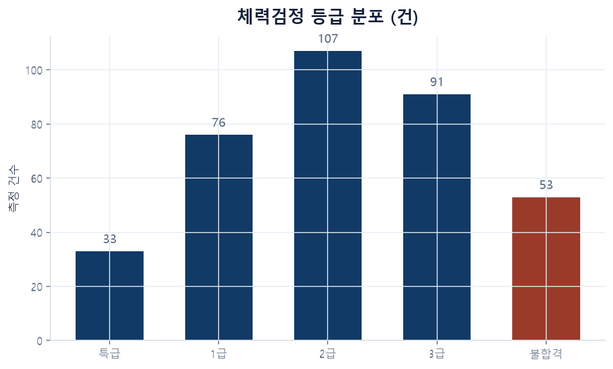
주문> 등급별 인원을 막대그래프로 그려줘. 막대 위에 값 표시.
그래프 도감 2/6 · matplotlib
선그래프 · 시간 흐름과 추세
- 용도 = 월별 · 분기별 변화 추적측정월별 평균 · 소요 추이
- 읽는 법 = 방향과 기울기기울기 급변 지점 = 원인 질문 대상
- 함정 = 점 2~3개로 추세 단정
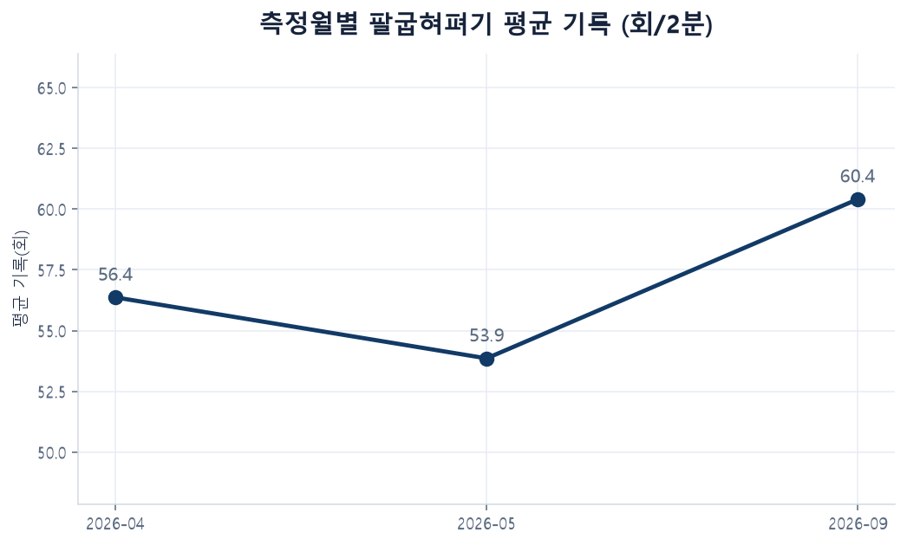
주문> 측정월별 평균 기록을 선그래프로, 값 표시해줘.
그래프 도감 3/6 · matplotlib
히스토그램 · 분포의 모양
- 용도 = 값의 쏠림과 퍼짐 확인기록이 몰린 구간 · 꼬리의 길이
- 읽는 법 = 봉우리 위치 · 평균과 중앙값의 간격간격 큼 = 극단값의 영향
- 함정 = 구간 폭에 따라 인상 변화
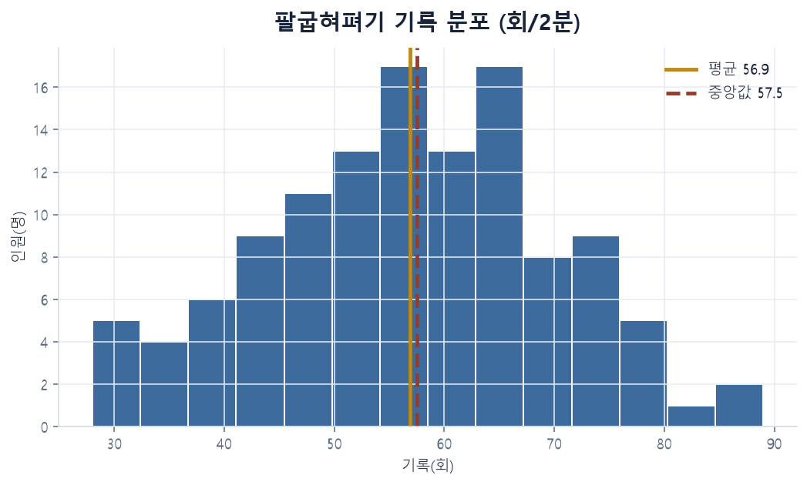
주문> 팔굽혀펴기 기록의 분포를 히스토그램으로, 평균선 포함해서.
그래프 도감 4/6 · seaborn
박스플롯 · 집단 간 분포 비교
- 용도 = 여러 집단의 분포 한눈 비교연령대 · 소속별 기록 편차
- 읽는 법 = 상자 = 가운데 50% · 바깥 점 = 이상치
- 함정 = 평균 한 숫자만으로 집단 비교
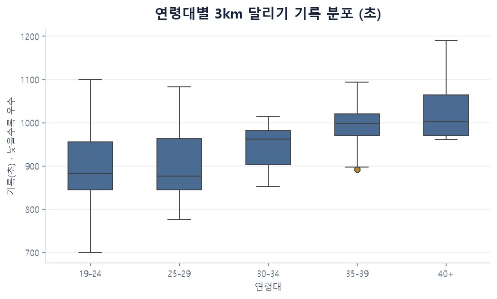
주문> 연령대별 3km 기록을 박스플롯으로 비교해줘.
그래프 도감 5/6 · seaborn
산점도 · 두 변수의 관계
- 용도 = 두 수치의 동반 이동 확인근력 - 지구력 · 훈련시간 - 기록
- 읽는 법 = 우상향 = 양의 상관 · 우하향 = 음의 상관
- 함정 = 상관 ≠ 인과같이 움직임 ≠ 원인과 결과
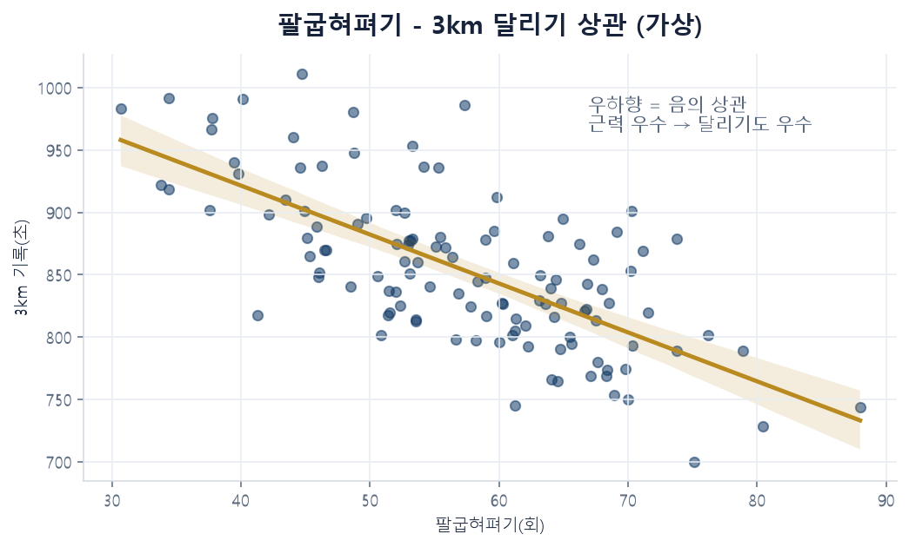
주문> 팔굽혀펴기와 달리기 기록의 관계를 산점도와 추세선으로.
그래프 도감 6/6 · seaborn
히트맵 · 교차표의 농도
- 용도 = 두 범주 조합의 취약 지점 탐지연령대 × 종목 불합격률
- 읽는 법 = 진한 칸 = 문제 지점 = 관리 우선순위
- 활용 = 훈련 계획 수립의 근거 자료
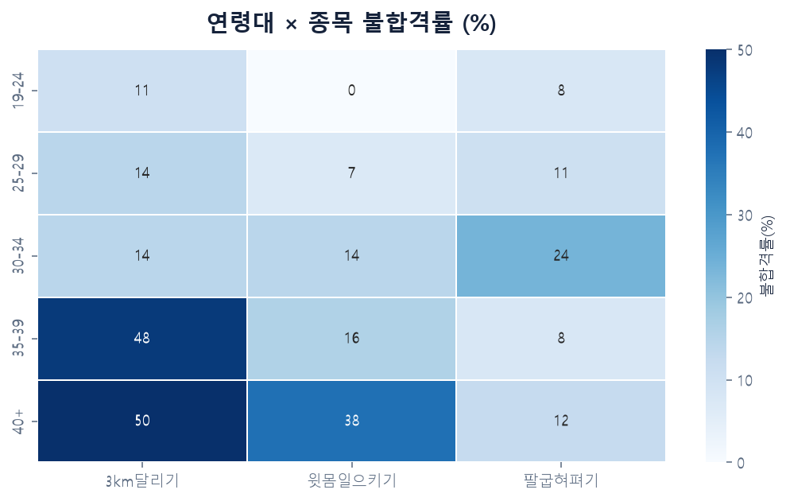
주문> 연령대별 · 종목별 불합격률을 히트맵으로 정리해줘.
3-7 · 용어 정리
기초 통계 용어 6
| 용어 | 뜻 · 주의점 |
|---|
| 평균 | 전체 합 ÷ 인원 · 극단값에 민감 |
| 중앙값 | 줄 세웠을 때 가운데 값 · 극단값에 강함 |
| 표준편차 | 흩어짐의 크기 · 클수록 편차 큰 집단 |
| 이상치 | 무리에서 동떨어진 값 · 오기입 또는 특이 사례 → 확인 후 처리 |
| 결측치 | 비어 있는 칸 · 제외 또는 보완 — 처리 방식 확인 필수 |
| 상관관계 | 같이 움직이는 정도 · 인과관계와 별개 |
3-8 · 용어 정리
데이터 다루기 용어 6
| 용어 | 뜻 · 주의점 |
|---|
| 범주형 / 수치형 | 나뉘는 값(소속 · 등급) / 재는 값(기록 · 시간) |
| 피벗(교차표) | 두 기준으로 접어 집계한 표 · 히트맵의 원천 |
| 시계열 | 시간 순서 데이터 · 추세와 계절성 분석 대상 |
| 모집단 / 표본 | 전체 / 일부 · 표본 결론의 일반화 주의 |
| 익명화 | 개인 식별 정보 제거 · 업로드 전 필수 절차 |
| 대시보드 | 핵심 지표 한 화면 · 상시 조회용 산출물 |
03 정리
AI 데이터 분석 요약
- 절차 = 익명화 확인 → 첨부 → 질문 → 차트 → 보고서
- 그래프 선택 = 목적 기준 · 주문에 이름 지정
- 수치 검증 없는 보고 금지 · 검증기 = 간 보는 사람
다음04 예측 모델 개관 · 1:35
04 · 1:35 – 1:50 · 15분
예측 모델 개관
과거 데이터로 다음을 추정하는 여섯 가지 도구
4-1 · 개념
예측 = 과거 데이터의 패턴을 앞으로 연장
지도학습
정답 붙은 과거 데이터로 학습
회귀 = 숫자 예측 · 분류 = 합격/불합격 판정
비지도학습
정답 없이 구조 발견
군집 = 비슷한 것끼리 자동 그룹
핵심"예측해줘" 한 마디로 모델 자동 선택 · 이름을 알면 주문과 검증이 정확
모델 도감 1/6 · 회귀
선형 회귀 · 직선으로 숫자 예측
- 원리 = 점들을 가장 잘 지나는 직선 한 개
- 용도 = 훈련량 → 기록 · 예산 → 소요 추정
- 주의 = 직선 관계일 때만 유효 · 범위 밖 외삽 주의
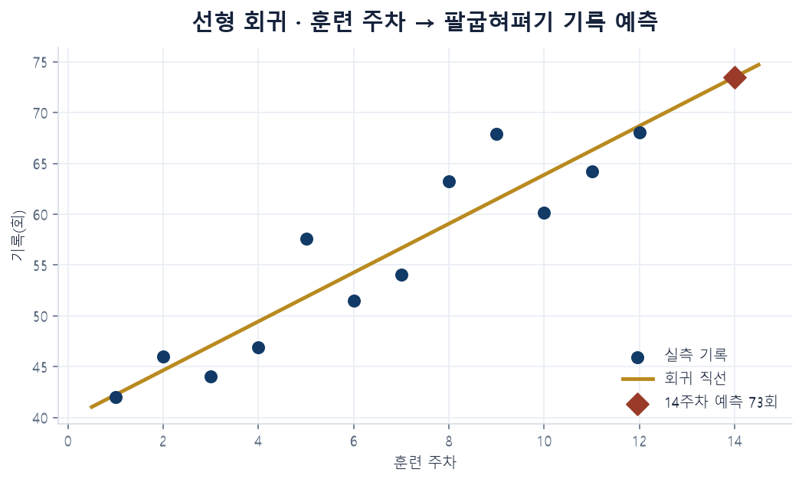
주문> 훈련 주차별 기록으로 14주차 예상 기록을 예측해줘.
모델 도감 2/6 · 분류
로지스틱 회귀 · 확률로 합격/불합격 판정
- 원리 = S자 확률 곡선 · 50% 경계로 판정
- 용도 = 합격 확률 · 중도 탈락 위험 추정
- 특징 = 결과 = 0~100% 확률 · 근거 제시 용이
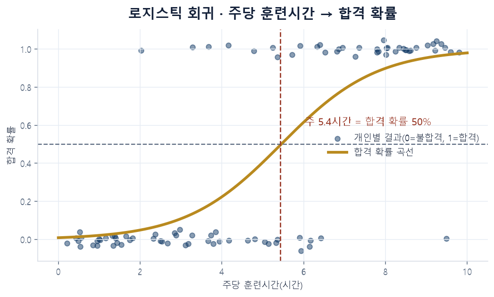
주문> 훈련시간에 따른 합격 확률 곡선을 그려줘.
모델 도감 3/6 · 분류
의사결정나무 · 질문의 연속으로 판정
- 원리 = 기준값 질문으로 가지치기 분기
- 특징 = 판정 근거가 그림 한 장 = 보고에 유리
- 주의 = 지나친 깊이 = 과거 암기(과적합)
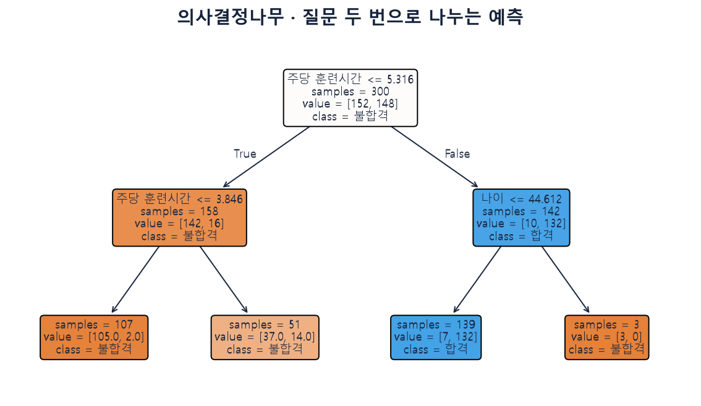
주문> 합격 여부를 나누는 핵심 기준을 나무 그림으로 보여줘.
모델 도감 4/6 · 분류·회귀
랜덤 포레스트 · 나무 여러 그루의 다수결
- 원리 = 서로 다른 나무 수백 그루 → 다수결
- 특징 = 단일 나무보다 안정 · 실무 기본기
- 주의 = 판정 근거 설명은 단일 나무보다 불리
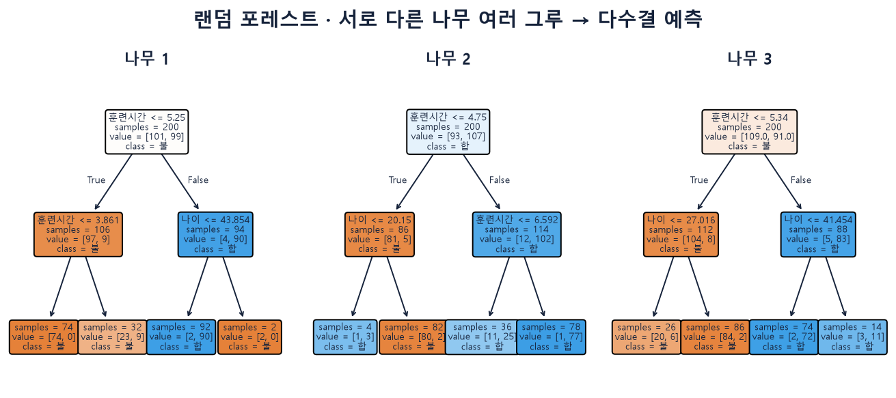
주문> 랜덤 포레스트로 예측하고, 중요한 변수 순위를 알려줘.
모델 도감 5/6 · 군집
k-평균 군집 · 비슷한 인원끼리 자동 그룹
- 원리 = 거리 기준 k개 그룹 자동 형성
- 용도 = 맞춤 훈련반 편성 · 유형 분류
- 특징 = 정답 없이 구조 발견 = 비지도학습
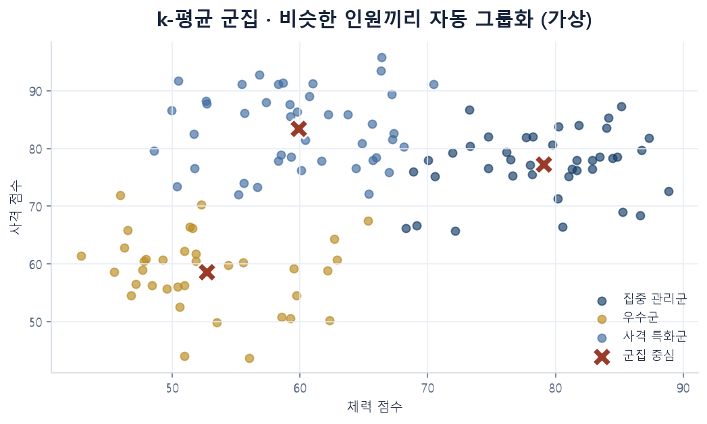
주문> 인원을 특성이 비슷한 3개 그룹으로 나누고 그룹별 특징을 요약해줘.
모델 도감 6/6 · 시계열
시계열 예측 · 추세와 계절성의 연장
- 원리 = 추세 + 계절성 분해 → 앞으로 연장
- 용도 = 정비 소요 · 보급 수요 · 지원율 전망
- 주의 = 예측 = 오차 범위와 함께 · 급변 이벤트 반영 불가
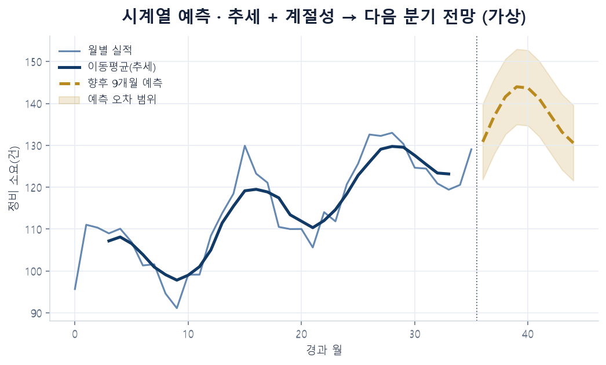
주문> 월별 실적으로 다음 분기 소요를 예측해줘. 오차 범위 포함.
04 정리
예측 모델 요약
- 숫자 예측 = 회귀 · 판정 = 분류 · 그룹 발견 = 군집 · 전망 = 시계열
- 모델 이름 지정 = 정확한 주문과 검증의 출발점
- 예측값 보고 = 오차 범위와 근거 동반
다음05 보안 · 정리 · Q&A · 1:50
05 · 1:50 – 2:00 · 10분
보안 수칙과 업무 적용
업로드 판단 기준 · 적용 우선순위 · 정리
5-1 · 원칙
업로드 판단 기준
| 업로드 금지 | 업로드 가능 |
|---|
| 비밀 · 군사보안 자료 전체 | 공개 자료 · 가상 데이터 |
| 작전 · 부대 편성 · 시설 정보 | 대외 공개된 행사 · 안내 정보 |
| 장병 개인정보(군번 · 주민번호 · 연락처) | 익명화된 집계치 · 서식의 틀 |
원칙외부 공개 가능 여부 = 업로드 가능 여부 · 판단 곤란 시 보안담당자 확인
5-2 · 판단
내 업무 적용 기준
반복 안내 · 서식
조건 · 매번 비슷한 문서 제작→결론 · 바이브코딩으로 틀 제작 후 재사용
집계 · 현황 보고
조건 · 수치 정리와 요약 반복→결론 · 익명화 후 AI 분석
비밀 · 민감 정보
조건 · 업로드 금지 항목 포함→결론 · 기존 방식 유지
05 · Q&A
질문
seongho.cho@kodekorea.kr · 미해결 질문 → 후속 자료로 회신
정리
오늘의 결과물
부서 소개 페이지 1건
주문 → 확인 → 수정의 바이브코딩 순서 체득
데이터 분석 보고 1건
첨부 → 질문 → 차트 → 요약 · 수치 검증 포함
업로드 판단 기준
외부 공개 가능 여부 = 업로드 가능 여부
마무리
다음 단계
- 이번 주 과제 = 자기 업무 데이터 1건 익명화 → 분석 → 부서 공유
- 연락처
- seongho.cho@kodekorea.kr · kodekorea.kr · github.com/shain1912
- 후속 자료
- 강의 슬라이드 https://shain1912.github.io/navy-ai-lecture/
- 예제 데이터 · 오늘 사용한 주문(프롬프트) 모음 — 같은 주소에 게시